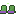
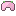
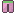
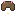
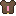
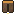
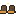
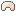
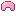
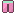

Sets
Klodderset De Knuffelzwammen
 Klodderkapje ·
Klodderkapje ·  Klodderhesje ·
Klodderhesje ·  Klodderbroek ·
Klodderbroek ·  Klodderstuiters
Klodderstuiters
(2) Glibberig: 15% kans dat een klap gewoon van je af glijdt
(4) Stuiterkracht: +12% schade en je klappen maken soms Plakkerig
Zwamset De Knuffelzwammen
 Zwamhoed · Sporenmantel · Zwambroek ·
Zwamhoed · Sporenmantel · Zwambroek ·
(2) Sporenschild: 10% minder schade
(4) Sporenregen: +12% spreukschade en je spreuken geven Gesporen
Kristalset De Splinterpieken
Kristalkroon · Kristalborstplaat ·  Kristalbeenstukken · Kristalschoentjes
Kristalbeenstukken · Kristalschoentjes
(2) Kristalhuid: +8 Elementweerstand, Bevroren duurt half zo lang en zware klappen doen dan niks extra
(4) Splinterslag: 20% kans dat je klap in scherven barst (25% schade op alles eromheen)
Mika-buitset De Splinterpieken
Mika-mijnhelm · Buitvest · Boorbroek · Kaaslaarzen
(2) Mijnlamp: +5 Kritiek
(4) Boorkracht: +15% schade op versteende wezens, +25% op je eerste klap
Bloesemset De Schemerwortel
 
(2) Bloesemvlucht: +6 Kritiek
(4) Stuifmeel: je kritieke klappen maken het wezen Gesporen
Schorsset De Schemerwortel
   
(2) Schorshuid: +12 Verdediging
(4) Harsschild: zak je onder 50% Vads, dan krijg je een harsschild (1x per 30 s)
Wortelset De Schemerwortel
 Wortelkroon ·
Wortelkroon ·  Wortelmantel ·
Wortelmantel ·  Wortelbroek ·
Wortelbroek ·  Wortelstappers
Wortelstappers
(2) Wortelvast: +8 Elementweerstand
(4) Wortellicht: je geeft zelf licht in het Wortelduister en doet +10% op rotwezens
Schelpenset De Lampionkust

(2) Schelpenhuid: +12 Verdediging
(4) Getijdenkracht: Schade tegen bazen +8%
Lampionset De Lampionkust
 
(2) Lampionglans: +8 Wijsheid
(4) Feestlicht: +10 Heal-kracht, en je geeft zelf licht in het donker
Wolkwachtset Hoogvads
 Wolkwachthelm ·
Wolkwachthelm ·  Wolkwachtkuras ·
Wolkwachtkuras ·  Wolkwachtbeenstukken ·
Wolkwachtbeenstukken ·  Wolkwachtlaarzen ·
Wolkwachtlaarzen ·  Wolkwachthandschoenen ·
Wolkwachthandschoenen ·  Wolkwachtcape
Wolkwachtcape
(2) Wolkwacht: Verdediging +10 en Vads +60
(4) Ridderplicht: Schade tegen bazen +8%
(6) Wolkkussen: onder 30% Vads vangt een wolk je op (Knuffelschild 20% van je max Vads, 6 s; 1x per 45 s)